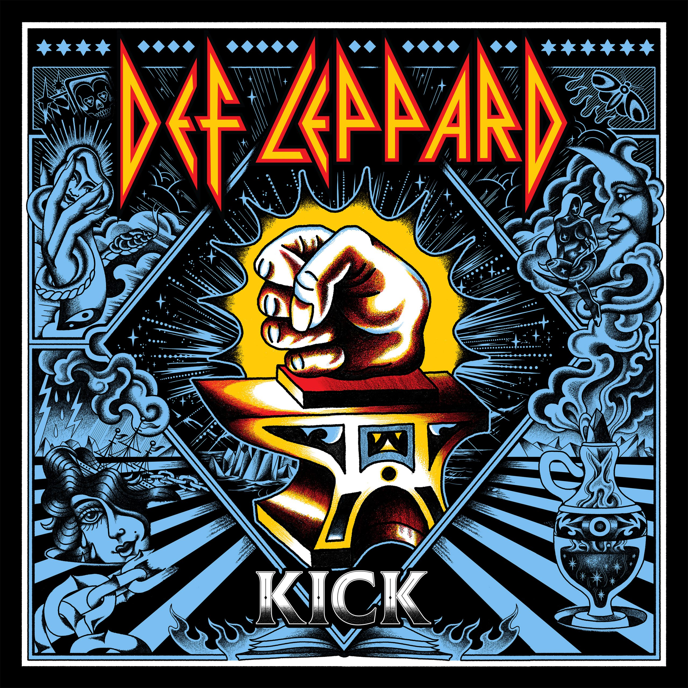
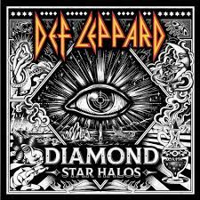
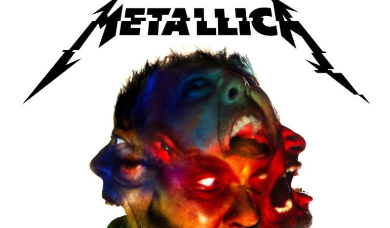
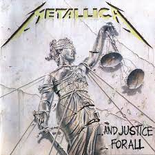
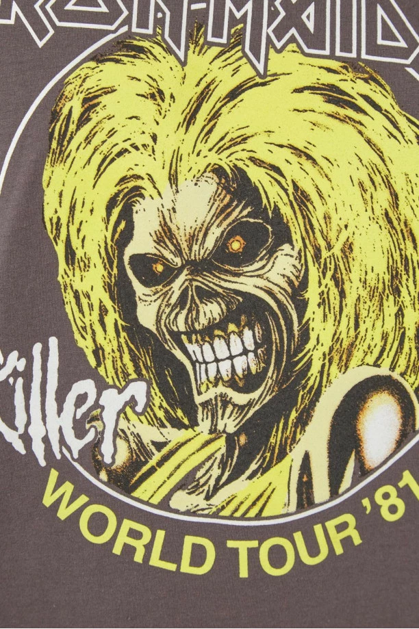
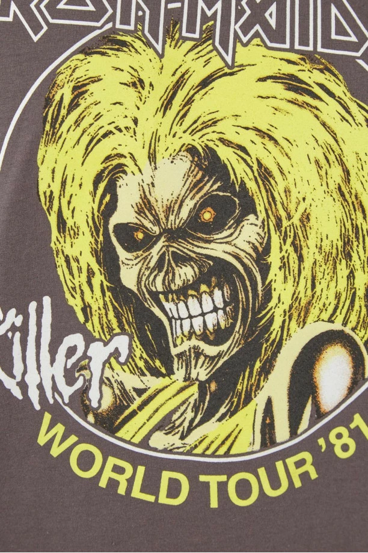

Def Leppard es una banda británica de rock originaria de Sheffield, Reino Unido, que dio inicio a su carrera a finales de los años setenta, alcanzando gran éxito mundial en la década de los ochenta, acercando al heavy metal a las emisoras de radio y al gran público en general, gracias a una mezcla de hard rock melódico con un gran trabajo vocal. Junto a otras bandas como Bon Jovi, Van Halen, Mötley Crüe, Scorpions, Metallica, Guns N' Roses, Iron Maiden, etcétera, es reconocida como una de las bandas de heavy metal superventas de los años 1980.Junto a grupos como Iron Maiden o Saxon fueron una de las bandas de cabecera de la New Wave of British Heavy Metal. Def Leppard ha vendido más de 100 millones de álbumes en todo el mundo, y dos de sus producciones han alcanzado la certificación de Diamante de la RIAA (Pyromania e Hysteria). De esta forma, se convirtieron junto a The Beatles, Led Zeppelin, Pink Floyd, y Queen en uno de los cinco grupos de rock con dos álbumes de estudio originales con ventas por más de 10 millones de copias solo en los Estados Unidos y más de 20 en todo el mundo. La banda ocupa el número 31 del ranking de VH1 Los 100 mejores artistas de Hard Rock y el puesto número 70 en Los 100 artistas más grandes de todos los tiempos. Su mayor éxito es la canción "Pour Some Sugar on Me", considerada por la cadena Vh1 la segunda mejor canción de los años 1980.Sus conocidos e influyentes álbumes de estudio Pyromania e Hysteria han sido incluidos por la revista Rolling Stone en su lista de los 500 mejores álbumes de todos los tiempos según Rolling Stone. La propia revista Rolling Stone ha situado a Hysteria en la primera posición en su lista de los 50 mejores discos de glam metal de la historia. Han sido incluidos en el prestigioso Salón de la Fama del Rock and Roll en 2019.
 Metallica es un grupo estadounidense de thrash metal1 originario de Los Ángeles, pero con base en San Francisco desde febrero de 1983. Fue fundado en 1981 en Los Ángeles por Lars Ulrich y James Hetfield, a los que se les unirían Dave Mustaine y Ron McGovney. Estos dos músicos fueron después sustituidos por el guitarrista Kirk Hammett y el bajista Cliff Burton respectivamente, Dave Mustaine fue despedido un año después de ingresar en la banda debido a su excesiva adicción al alcohol y su actitud violenta, siendo sustituido por Kirk Hammett (exguitarrista de Exodus). Ron renuncia a la banda debido al mal comportamiento de Dave Mustaine, el cual era violento y problemático cuando estaba bajo el efecto del alcohol. Es entonces, tras contactar con Cliff Burton que la banda se traslada a San Francisco. (Cabe resaltar que Ron sabía que lo iban a despedir y sustituir por Cliff Burton). Por otra parte, el 27 de septiembre de 1986, fue la muerte de Cliff Burton en un accidente de autobús en Suecia, durante una de sus giras, esto provocó la entrada al grupo de Jason Newsted,2 quien, tras su abandono quince años más tarde, sería sustituido por el bajista actual, Robert Trujillo. Hasta la fecha, el grupo ha editado 10 álbumes de estudio, siendo el último de estos Hardwired... to Self Destruct el cual fue lanzado mundialmente el 18 de noviembre de 2016, aunque por medio de sus redes sociales anunciaron un nuevo álbum venidero para el 2023 titulado 72 Seasons. Las ventas totales de Metallica superan las 90 millones,3 y se les considera parte de los cuatro grandes del thrash metal, junto con Megadeth, Slayer y Anthrax.4 Además, el grupo ha conseguido numerosos premios musicales, entre los que destacan nueve Grammys, dos premios otorgados por la cadena musical MTV, dos galardones de la Academia de Música Americana (American Music Awards) y dos premios de la revista Billboard, además de pertenecer desde el año 2009 al Salón de la fama del Rock5 y poseer una estrella en el Paseo de la Fama de la revista Kerrang!
 Iron Maiden es una banda británica de heavy metal fundada en 1975 por el bajista Steve Harris. Es considerada una de las bandas de metal más importantes de todos los tiempos. Ha vendido más de 100 millones de discos en todo el mundo, a pesar de haber contado con poco apoyo de la radio y la televisión comercial durante la mayor parte de su carrera. Sin embargo, la banda basó su éxito en llegar directamente a los aficionados, grabando discos de alta calidad y realizando destacadas actuaciones en vivo.23 La agrupación ha obtenido diversos reconocimientos a lo largo de su carrera, como el Premio Ivor Novello en la categoría de «Logro Internacional» en 2002. En 2005 fueron incluidos en el Hollywood's RockWalk en Sunset Boulevard, Los Ángeles. En 2009 fue ganadora del premio «Mejor Performance en Vivo» en los BRIT Awards, el premio musical más importante del Reino Unido. En el año 2011 también obtuvieron un Grammy, en la categoría de «Mejor interpretación de Metal», por la canción «El Dorado».4 Además, ha ganado el premio de mejor banda metal británica del año en varias ocasiones, en los Metal Hammer Golden Gods Awards,5 entre otros reconocimientos. Durante sus más de 40 años de trayectoria, Iron Maiden ha sido identificada gráficamente por su famosa mascota «Eddie the Head», un personaje antropomórfico que ha aparecido en la gran mayoría de las portadas de sus álbumes y sencillos, así como en sus presentaciones en vivo.
Tras varias audiciones y cambios en su formación, ésta finalmente se consolidó con el vocalista Paul Di'Anno, los guitarristas Dave Murray y Dennis Stratton y el batería Clive Burr, siempre bajo el liderazgo del bajista y principal compositor Steve Harris. Luego de muchas giras por todo el Reino Unido, en 1979 la banda publicó un EP llamado The Soundhouse Tapes, y en 1980, su álbum debut homónimo, el cual llegó al cuarto puesto de las listas británicas, sin mediar promoción masiva alguna. Ese mismo año, Stratton fue reemplazado por el guitarrista Adrian Smith, con quien publicaron el álbum Killers (1981).6 Luego, y tras la salida de Di Anno, ese mismo año, el cantante Bruce Dickinson entró para ocupar el puesto de vocalista para el álbum The Number of the Beast de 1982, el cual llegó al número uno de las listas británicas, marcando el inicio de una serie de lanzamientos de impacto.7 Para el año 1983 la banda lanzó el álbum Piece of Mind, que contaba como novedad con la salida del batería Clive Burr y la entrada de Nicko McBrain en su reemplazo. A partir de allí, se consolidó la alineación más exitosa que ha tenido la agrupación, la cual ha realizado numerosas giras y álbumes. Iron Maiden ha grabado 17 álbumes de estudio y es considerada una de las bandas más influyentes no solo para el metal y sus respectivos subgéneros, sino también para diversas agrupaciones de rock, e incluso artistas de otros estilos.891011
 
